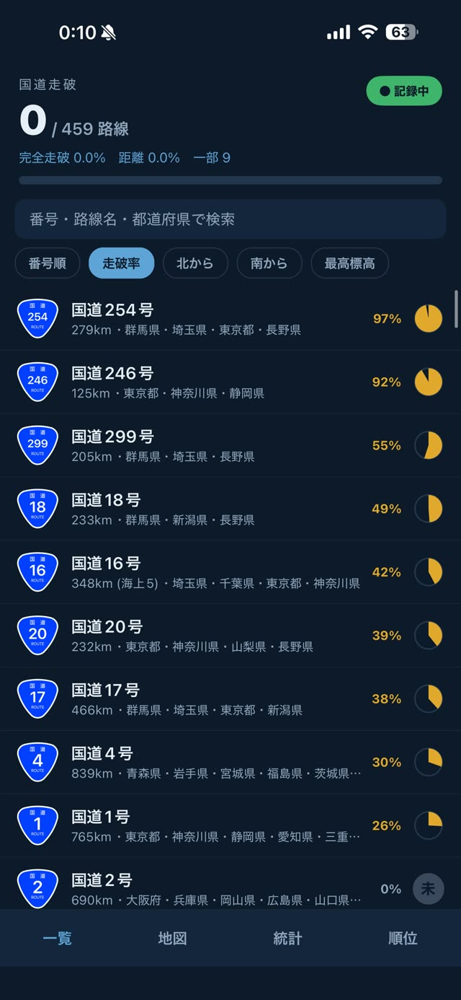
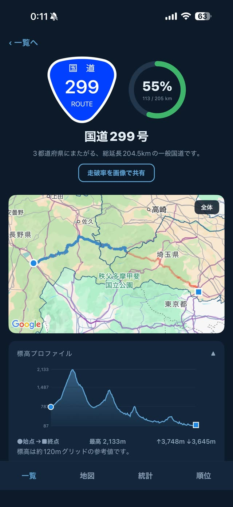
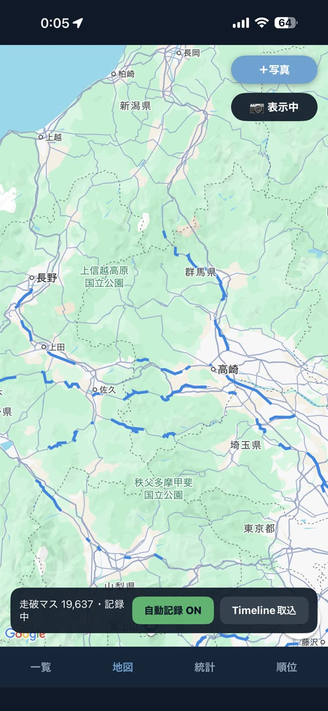
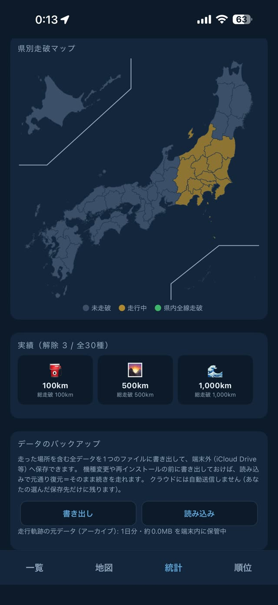

459路線
日本の一般国道は459本。走った分だけ、地図が塗られる。
おにコレは、ドライブの走行をGPSで自動記録して、どの国道をどこまで走ったかを残すアプリです。記録は端末の中だけに保存されます。
App Store で入手
iPhone・無料（アプリ内課金あり）／Android 版は準備中
引くと、走った国道が日本の形になる。
走破済みの区間は、地図をどれだけ引いても消えません。倍率に合わせて線を細くするので、日本全体まで引いても道の形が潰れずに残ります。
路線ごとの走破率、都道府県別の走破マップ、坂の上り下りが分かる標高プロファイル。走った跡は、数字と形の両方で残ります。
やることは、記録を入れて走るだけ。
1
記録をオンにする
走り出す前に記録をオンにします。あとの操作は要りません。
2
いつもどおり走る
走行中の位置から、いまどの国道にいるかを判定して記録します。
3
地図が塗られる
走った区間が路線ごとに積み上がり、走破率が伸びます。写真を添えることもできます。
画面




無料で始められます。Pro は買い切りです。
サブスクリプションではありません。一度買えば、そのあとの課金はありません。
| できること | 無料 | Pro |
|---|---|---|
| 走行の自動記録・走破率・地図 | ○ | ○ |
| 記録できる路線の数 | 10本まで | 無制限 |
| 標高プロファイル（獲得標高・坂の可視化） | — | ○ |
| 写真の添付 | 枚数に上限 | 無制限 |
| シェア画像 | 透かしあり | 高解像度・透かしなし |
| 最高標高で並べ替える | — | ○ |
おにコレ Pro ¥490 — 買い切り。
よくある質問
- 走行データはどこに保存されますか？
- すべてあなたの端末内に保存されます。開発者のサーバーには送信されません。詳しくはプライバシーポリシーをご覧ください。
- 機種変更にデータを引き継げますか？
- 統計画面の「書き出し」でバックアップファイルを作成し、新しい端末で「読み込み」してください。
- 一部の国道で地図の線が途切れています。
- 未開通区間・フェリー航路などにより実際に分断されている路線です（該当路線の詳細画面に注記があります）。
- 購入した Pro が復元できません。
- ペイウォール画面の「購入を復元」を、購入時と同じ Apple Account でお試しください。解決しない場合は下記までご連絡ください。
- Android 版はありますか？
- 準備中です。公開できしだい、このページに入手先を追加します。
Onikore — Japan Route Collection
A drive-logging app for “collecting” all 459 of Japan's national routes. It records your drives via GPS and shows how far you have driven each route — with per-route completion rates, a prefecture map, and elevation profiles. Free on iPhone, with an optional one-time Pro unlock (¥490). An Android version is in preparation.
- Where is my driving data stored?
- Entirely on your device. Nothing is sent to the developer's servers. See our Privacy Policy.
- Can I transfer data to a new phone?
- Use “Export” in the Stats screen to create a backup file, then “Import” on the new device.
- Restore purchase issues?
- Tap “Restore Purchases” on the paywall with the same Apple Account used for purchase. Contact us if it persists.